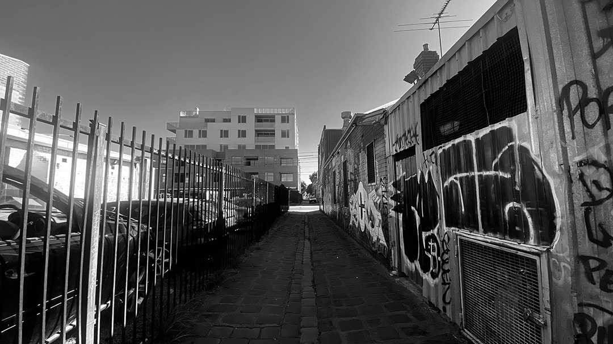

Home
Employment History
Previous Work
My Linktree
Previous Work
This page will include work that I have done previously for either school, or projects for work. This page will be updated as I create more content.
School
Gaming Montage | Year 12 Media 2021 This is a link that will be sent to my video which is on YouTube.
Learn more »
Contemporary Art | 2nd Year Collarts This photograph was my final photograph for Assignment 3 for Contemporary Art, Design & Cultural History

Work Projects
There are currently no work projects done at the time being, but this will be updated as I go on.